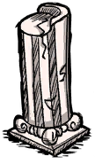

| Marble Pillar | |
|  |
|
| Tool Required | |
| Resources | ×2-3 |
| Renewable? | No |
| Common Biomes | Chess |
| DebugSpawn | "marblepillar" |
| “ | I've always wondered who built those. | ” |
| –Maxwell | ||
Marble Pillars are naturally spawning Structures found around the Wooden Thing in a Chess biome in Sandbox Mode or in various Chess biomes in Adventure Mode. Usually, there are Clockwork Monsters and Evil Flowers near them. They can be mined with a Pickaxe or the Pick/Axe to acquire 2-3 Marble pieces. The pickaxe requires 10 hits to break a Marble Pillar down, whereas the Pick/Axe only requires 8.
")
| Naturally spawning world objects | |
| Plants | Berry Bush • Carrot • Cave Banana Tree • Cave Lichen • Flower (Evil Flower, Fern) • Grass • Light Flower • Lureplant • Mandrake • Mushrooms • Mushtree • Plant • Reeds • Sapling • Spiky Bush • Tree • Totally Normal Tree |
| Mobs and Mob Housing | Beehive • Hound Mound • Pond • Pig Fortress • Pig House • Pig King • Pig Torch • Rabbit Hutch • Rundown House • Slurtle Mound • Spider Den • Spilagmite • Splumonkey Pod • Tallbird Nest • Walrus Camp • Worm Hole |
| Inanimate | Ancient Pseudoscience Station • Ancient Statue • Basalt • Boulder • Gramaphone • Grave • Harp Statue • Headstone • Suspicious Dirt Pile • Marble Pillar • Marble Tree • Maxwell's Door • Maxwell Statue • Maxwell's Light • Merm Head • Nightmare Light • Nightmare Lock • Nightmare Throne • Obelisk • Ornate Chest • Pig Head • Pillars • Relic • Sinkhole • Skeleton • Stalagmite • Touch Stone • Thulecite Wall |
| Things | Box Thing • Crank Thing • Eye Bone • Metal Potato Thing • Ring Thing • Wooden Thing |
{kind=link}
{kind=link}